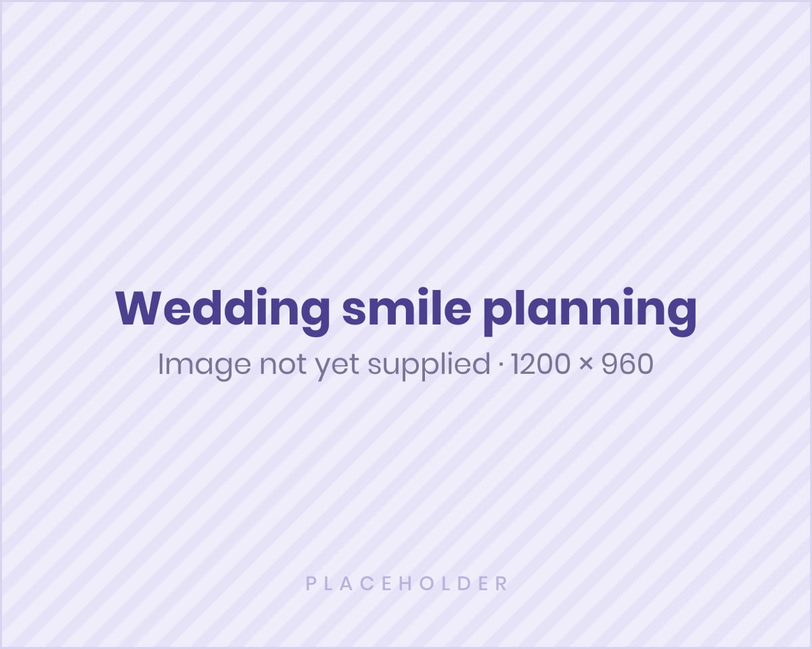

Danthaja In-House Aligners
Accessible, locally managed care for mild concerns, with clinical oversight by Dr Surain Gomez.
Learn moreLimited slots · Ends [DD Month YYYY]
Clear Aligner Assessment Week is designed to turn interest into confirmed consultations. Reserve a limited assessment slot, ask questions, and understand whether Danthaja In-House Aligners or Premium Invisalign may be suitable for your smile goals.
Campaign dates and slot numbers are placeholders — confirm before launch.

Pathway recap
Accessible, locally managed care for mild concerns, with clinical oversight by Dr Surain Gomez.
Learn moreGlobally recognised aligner care with specialist planning by Dr Jeremy Perera.
Learn moreMyths & objections
Aligners may help with a range of concerns, from mild spacing to some crowding and relapse. Suitability depends on your teeth and bite, which is why every case starts with an assessment.
Clear aligners are designed to be discreet. Most people may not notice them during normal conversation.
Danthaja In-House Aligners are competitively positioned and locally supported, with clinical oversight throughout. The right pathway depends on your case, not just the price.
Comparisons help, but they are not a diagnosis. Your clinician will recommend a pathway based on assessment.

Digital scan explained
Where appropriate, a digital scan captures a 3D record of your teeth. It helps your clinician assess alignment, plan movement, and — if you go ahead — design your aligner sequence. If a scan is not suitable, impressions may be used instead.
Cleaning tips
Rinse trays with cool water each time you take them out.
Use a soft brush — avoid hot water, which may warp trays.
Brush and floss before putting aligners back in.
Store trays in their case — never wrapped in a napkin.

Wedding smile planning
Brides, grooms and families often ask whether aligners can fit a wedding timeline. The earlier you start, the more options you may have. Your clinician will advise what is realistic based on assessment — and whether a facial confidence plan with Vathraja Facial Chambers may complement it.
Read: choosing your pathwayDoctor-led FAQs
Your clinician reviews your teeth, bite, and oral health, discusses your goals, and explains which pathway may suit you, with next steps and an estimated timeline after assessment.
No. The assessment is designed to help you make an informed decision. There is no obligation to proceed.
Treatment time depends on case complexity, patient compliance, and the number of aligners required. Your clinician will estimate the timeline after assessment.
You may feel pressure or mild discomfort when starting a new tray. This usually means the aligners are guiding tooth movement and often settles after a few days.